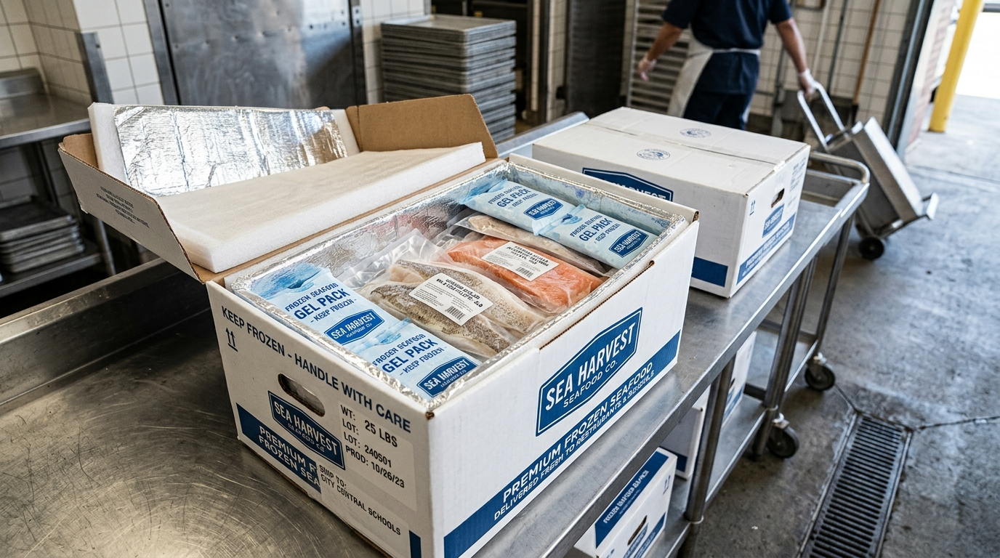

간편하고 명확한 B2B 구매 프로세스
신규 거래처 등록부터 당일 출고 마감, 전자세금계산서 발행까지
영양사님과 구매 담당자가 주방 업무에만 집중할 수 있도록 표준 발주 체계를 제공합니다.
통마리 버터플라이 & 두미(대가리/꼬리) 절단 맞춤 발주
테이블 위 푸짐한 1인분 상차림 비주얼을 유지하면서, 주방의 손질 인건비와 음식물 쓰레기를 없애드립니다.
마리당 규격 선택
280~320g(점심 백반 구이용), 330~380g(특대 구이 정식용) 중 매장 메뉴 구성에 맞는 규격을 선택합니다.
맞춤 절단 옵션 협의
① 원형 유지(대가리/꼬리 포함), ② 대가리·꼬리 절단, ③ 2등분 횡단 절단 중 주방 조리도구에 맞게 지정합니다.
14:00 이전 주문 접수
공식 쇼핑몰(고래밥몰) 또는 전화/발주서로 접수 시 당일 출고되어 다음 날 아침 식당 냉동고로 직배송됩니다.
그릴 직화 5분 서빙
해동 후 비린내와 싱크대 뒷정리 없이 바로 팬과 그릴에 투입하여 주문 즉시 5분 만에 손님상에 올립니다.
1인 배식 정량 균일 토막 & 콤비오븐 대량 조리 프로세스
배식 편차(크기 불만)를 없애는 g 단위 정밀 컷과 콤비오븐 100~500인분 대량 조리 매뉴얼을 지원합니다.
🧮 단체급식 1인 배식량 & 발주 박스 자동 계산기
배식 인원수와 1인당 배식 목표 중량을 선택하시면 필요한 총중량과 권장 박스(10kg 벌크) 수량을 즉시 계산해 드립니다.
배식 중량 규격 확정
1인당 60g, 70g, 80g, 100g 등 피급식자 연령과 단가에 맞춘 정량 균일 토막(Equal-Cut)을 확정합니다.
행정 및 품의 서류 구비
식약처 HACCP 지정서, 공인시험기관 자가품질검사 성적서, 원산지증명서를 다운로드하여 기안을 완료합니다.
콜드체인 박스 입고
10kg 표준 벌크 박스에 규격 포장된 생선이 -18℃ 이하 냉동 물류망을 통해 급식소 냉동고로 입고됩니다.
콤비오븐 12분 대량 조리
타공 팬과 종이호일에 껍질이 위를 향하게 정렬 후 200℃ 12분 조리로 잔반율 0% 배식을 완료합니다.

손질 인건비 0원, 100% 가식부 정량 납품
주방에 들어오자마자 해동 후 바로 팬과 오븐으로 직행할 수 있도록 전처리된 정량 필렛이 냉동 차폐 패키징되어 전국 사업장으로 배송됩니다.
• 업소용 표준: 10kg 벌크 박스 (규격별 팩 포장)
• 소형 식당용: 5kg 박스 또는 1팩 단위
• 첫 거래처 대상 1회 샘플 박스 지원 상담 가능
• 평일 14:00 이전 결제 시 당일 즉시 출고 (익일 수령)
• 월~금 주 5일 정기 출고 (공휴일 전날 제외)
• 정기 대량 납품은 요일별 지정 정기배송 지원
• 사업자 회원 등록 시 100% 전자세금계산서 발행
• 신용카드, 실시간 계좌이체, 무통장 입금
• 정기 거래 기관은 후불/월말 일괄결제 협의 가능
표준 대량 발주서 엑셀 양식 다운로드
단체급식 식재료 품의 및 정기 발주에 사용하는 공식 발주서 양식(Excel)입니다.
작성 후 이메일(fineplanning@gmail.com)로 보내주시면 전담 매니저가 확인 후 즉시 회신드립니다.